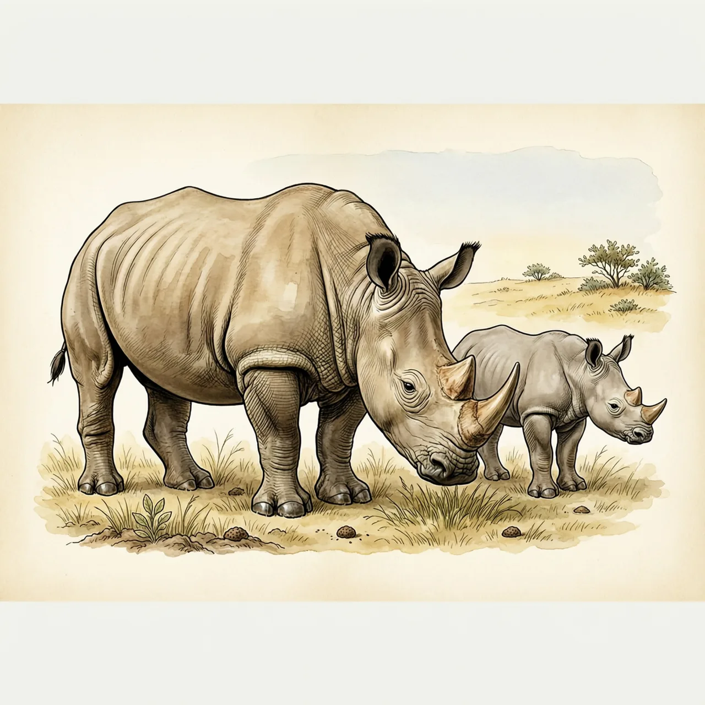
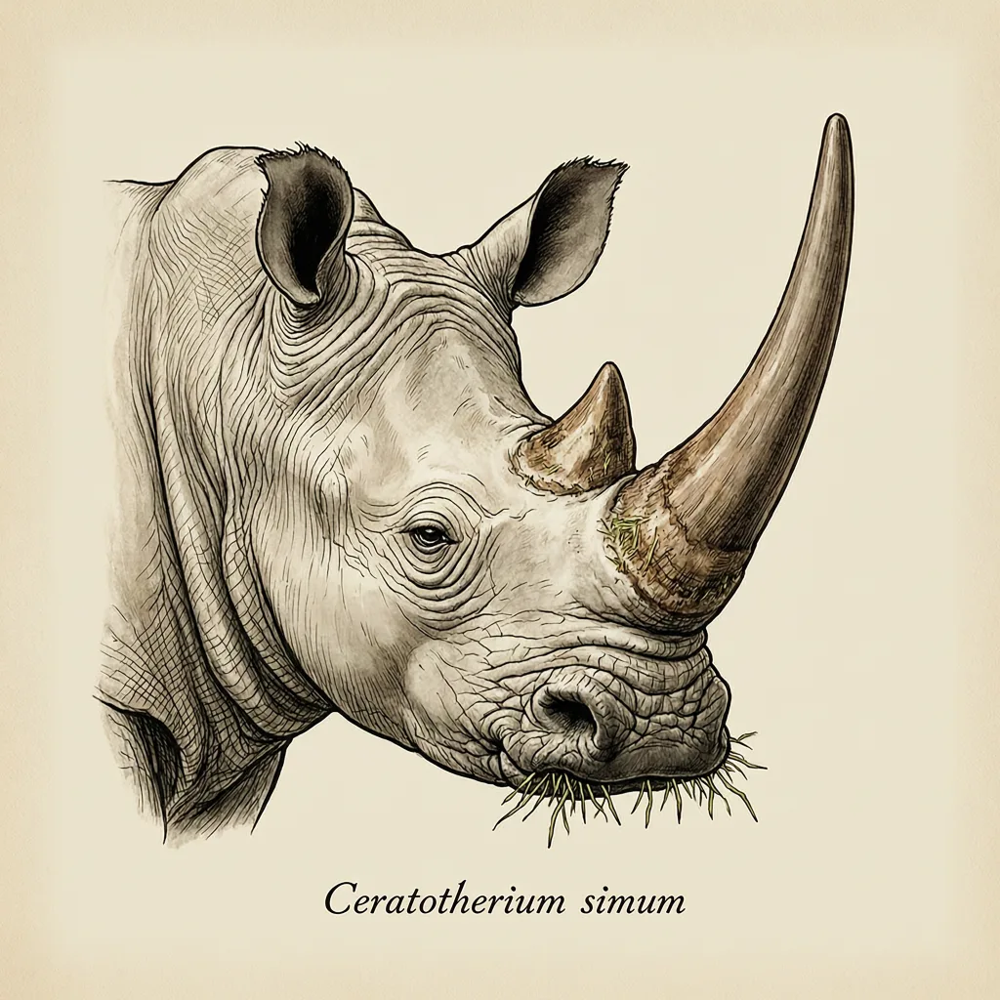

白犀是现存体型最大的犀牛之一，生活在非洲中部与南部的开阔草原，靠宽而方正的上唇贴地啃草，一天有一半时间花在进食上。北白犀只剩两头雌性，南白犀约1.8万头。它的身体并不比黑犀更白，名字的由来至今没有公论。
肯尼亚的奥佩杰塔自然保护区里，饲养着北白犀确认存活仅剩的两个个体——「纳金」与「法图」，都是雌性。2018年3月19日，最后一头已知的雄性北白犀「苏丹」死亡。白犀分南北两个亚种，原产非洲中部与南部的开阔草原：中部只剩下那两头，南部却有约1.8万头南白犀，是数量最多的犀牛。选草原没有别的理由——白犀以草为主食，而大草原上最多的就是草。
白犀的生存全押在那张嘴上：上唇宽而方正，贴着地面把草成排割进嘴里，这副唇就是贴地的割草器；同为犀牛，黑犀的嘴唇却是尖的，吃法不一样。靠这身装备，白犀一天有一半时间花在进食上，三分之一用来休息，其余时间泡在泥浆里给身体降温。它并不好斗，真被威胁时，庞大的身体能跑出每小时50多公里的速度，奔跑时把重心落在后肢的三趾之间，靠臀部稳住前身。
白犀的身体并不比黑犀白，两种犀牛毛色差别不大，真正的区别在体型和嘴唇。那「白」字从哪来？流传最广的说法是它来自荷兰语wijd（意为「宽」），被英语使用者误译成了white；可早期荷兰语文献里这两种犀牛本来就叫「黑」与「白」，从没出现过「宽」「窄」犀牛的提法，这个误译故事讲不通。名字的由来至今没有公论，另有两种猜测：「白」指的是它的角，或指背上那层晒干的白泥。
